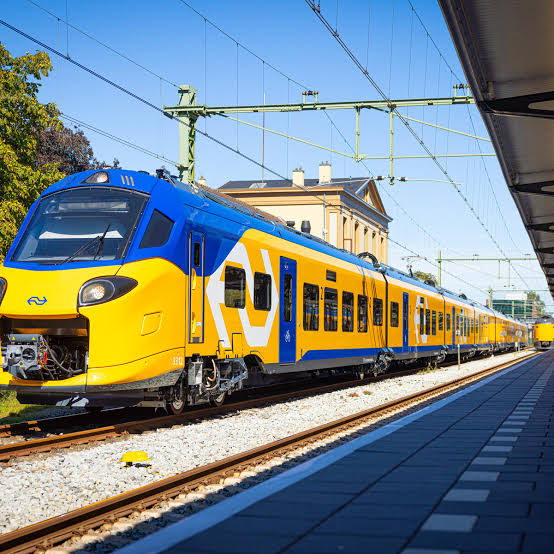
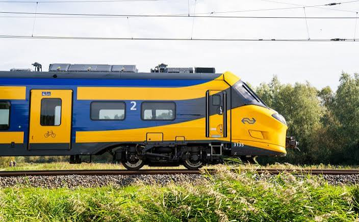
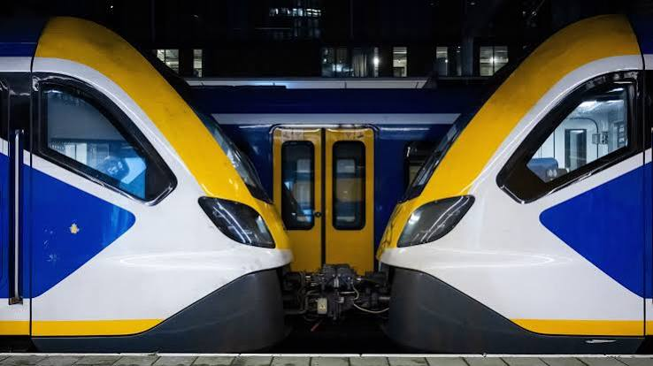

TreinFan is een webpagina voor echte treinliefhebbers. Hier vind je informatie over verschillende treinen, hun geschiedenis, en de nieuwste ontwikkelingen in de wereld van treinen. Of je nu een modeltrein verzamelaar bent of gewoon geïnteresseerd bent in treinen, TreinFan heeft iets voor jou!
Met TreinFan kan je ook nieuwe mensen leren kennen bij onze maandelijkse treinspotters bijeenkomsten. Iedereen is welkom, voor meer informatie, check onze evenementenpagina.
We hopen dat je geniet van je bezoek aan TreinFan100% en dat je veel interessante dingen leert over treinen!
Vergeet niet om je aan te melden voor onze nieuwsbrief om op de hoogte te blijven van het laatste trein nieuws en evenementen.
Onze eerstvolgende evenement is de Treinspotters Bijeenkomst op 15 september 2026. Dit is een geweldige kans om andere treinliefhebbers te ontmoeten, je kennis te delen en te genieten van een dag vol treinen! Zien wij jou 15 Septmeber om 11:00 uur op Utrecht Centraal?

Wist je dat? Het bedrijf "arriva" ooit een dochterbedrijf was van het duitse bedrijf "deutsche bahn". Inmiddels is het in de handen van het Amerikaanse bedrijf "squared Capital"